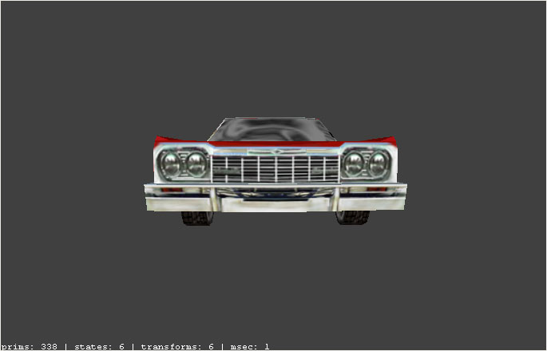
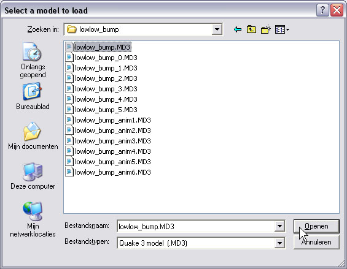

| Adding the 1st frame from another MD3 |
You can combine several non-animated MD3-files into 1 animated MD3. This provides a way to make an animated MD3 from, for example, MAP-converted-models made in Radiant (which is what i will do in this example).
Because adding a frame from another MD3 is pretty simple, this demo will mainly focus on the construction of animation-frames from a Radiant-model. |
| If You are only interested in adding a frame, You can go directly to step: "Creating the animated MD3" |
For this example i recreated (in Radiant) the model of an existing lowrider car. The original model is not animated, and therefore static. I wanted it to bump on its front-wheels.
The next 3 images show the brushwork in Radiant: |
|
| |
|
| |
|
| |
| |
| Radiant issues to be aware of |
There is an important thing to know, before starting to create Your own animated Radiant-models.
When You arbitrary rotate an object, the textures can get misaligned. This even happens when textures are locked
Just take a look at what happens to the car when i rotate it a bit: |
|  |
The front of the car in its initial position. Textures look fine, because the model has not been rotated yet..
This is the model as i have created it. I mapped all textures onto this model. It is the model as seen on the first 3 images on this page. |
| |
|
| The front of the car again, but now after rotation. Textures are misaligned, even with 'Locked Textures' .. |
| |
| This issue with the misaligned textures can be very annoying. However, when using the 'Add frame[0] from...'-option with this tool, there is some important thing to know about the tool. Something that will make it a lot easier to create modified versions of the initial model: |
| |
When combining MD3-files, the texture-coordinates of the first MD3-file are used for all other frames that will be added (from the other files).
This means that only the MD3 You start with, must have the textures aligned correctly.
The model(s) of the added frames may have their textures all misaligned, those texture-coordinates will be ignored anyway.. |
| |
The plan therefore is, that the animated bumpcar will have the original Radiant-model as its first frame. This way those texture-coordinates are used for the remaining frames as well. Since my initial model's textures are correctly mapped onto the model, all following frames (with the rotated models) will be correct too.
However, in my case this first frame will not be part of the animation-loop. Later in-game i just skip playing the first frame of the animated MD3, so nobody will notice it's there.. |
| |
| |
| Making the seperate frames |
For this demo i have created some MD3-files. Each MD3 contains the same, but slightly rotated model.
I converted all the Radiant-models seperately into MD3-files. Everyone of these MD3-files is non-animated.
Here are the different poses of the same car: |
|
| |
|
| |
|
| |
|
| |
|
| |
I stored all the MD3-files on disk. In my case, the initial, unmodified model's file is called: lowlow_bump.MD3
I've selected the other files too, only to show howmany files i have created for my animation. |
|
| |
| |
| Creating the animated MD3 |
Now that You have all necessary files for the animation, You can start combining them into 1 animated MD3.
The first thing to do is loading the initial MD3.
Like said before, this first MD3's texture-coordinates will also be used for any frames that will be added. |
|
| |
| Here i choose the initial model. This model will make the first frame of the animation. |
|  |
| |
| The MD3 is loaded. Not yet animated, just the static car.. |
|
| |
| |
| Adding frame[0] from another MD3 |
With the initial model loaded, select the choice from the menu:
'Add Frame[0] From...' |
|
| |
| Now select the MD3 with the second frame of the animation: lowlow_bump_0.MD3 |
|
| |
| |
| 1 frame has been added |
Once a frame has been added, You can see that the animation-length has increased by a frame.
There is also a message in the statusbar, indicating the addition. |
 |
| |
| |
| Adding more frames to the animation |
Repeat the same steps to add the other frames to make the final animated MD3.
Once all frames are added, You can save the model; It will then be saved as an animated MD3.
You could also edit more of the model, like i did. I changed the shadernames because the demo-MD3 has been placed in another folder. I also smoothed the surface of the windshield so it doesn't look that blocky anymore.
The animated model of the lowrider is included in this file: demomodels.zip |
| |
| |
| Starting an animation from mapscript |
From mapscript the animation can be started with the 'startanimation'-command.
In my case the final model has 8 frames. My first frame is not really part of the animation-loop, so i skip it. The script-command for my demo-model would then be:
startanimation 1 7 12 norandom
Note: The first frame of an animation has the frame-number 0 (not 1)..
Of course the model i made, is just for this example. It can be different in Your own cases (meaning framenumbers). |
| |
| |
| Restrictions |
All files that are used to combine the final MD3 must contain the same model. That is, the files must have:
the same number of surfaces,
the same shaders,
the same number of vertices per surface,
the same number of tags.
You will get an error-message if one of those criteria is not met, and no frame will be added. |
| |
| |
| Thanks |
Thanks to meat for his permission to use his model as a blueprint for this example.
www.badmeat.com
I also included meat's original model for download: lowlow.zip |
| |
| |